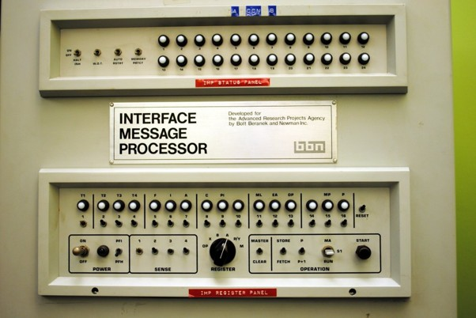
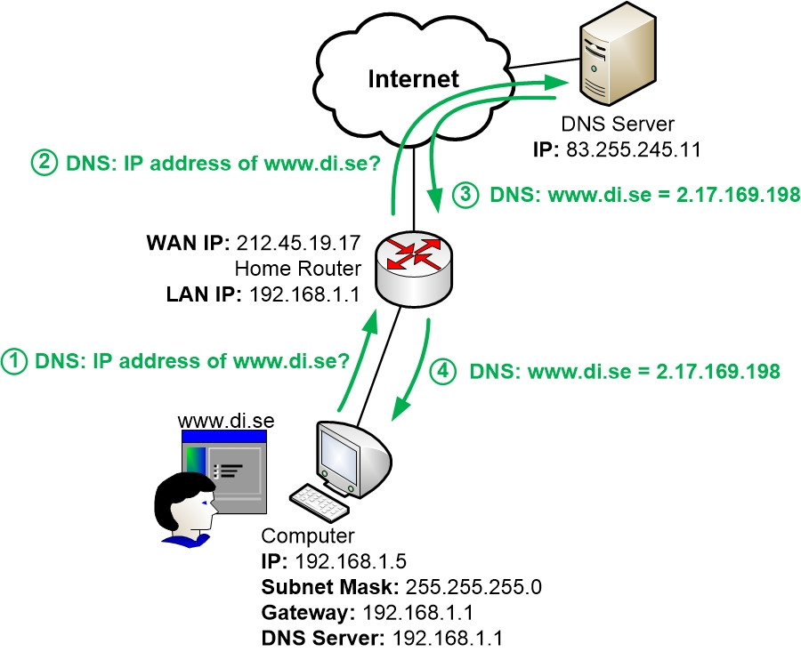
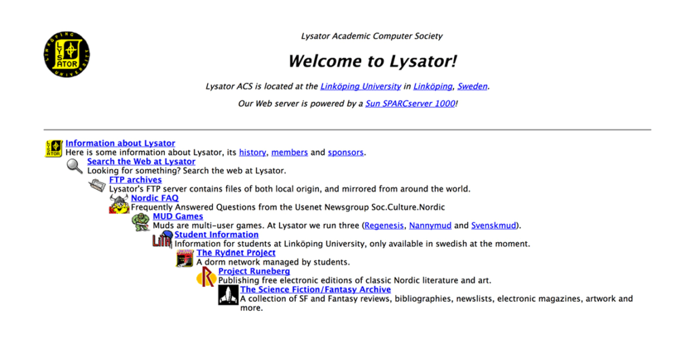

Vad var ARPANET?

Arpanet, som står för Advanced Reserch Projects Agency Network, skapades av det amerikanska försvarets forskningsorgan och Arpanets historia startar på den amerikanska försvarsmydigheten ARPA där iden till internet först formuleras 1963, så Arpanet var den första formen av det vi idag känner som internet och det blev operativt 1969
Den första meddelandet mellan två datorer skickades den 29 oktober 1969 föddes också det första fröet till dagens internet, den medelandet som skickas är från en forskagrupp på universitetet UCLA, ledd av professor Leonard Kleinrock till en dator på Standford University
Vem skapade World Widee Web?
Han som skapade World Wide Web är Timmothy John Berners-Lee, han född 8 juni 1955 i London, England.
På året 1989 lade Tim Berners-Lee fram ett förslag till ett globalt hypertextprojekt, World Wide Web, baserat på Enquire. Efter flera år av samarbete och kunskapsutbyte via ett nätverk av hypertextdokument. Den 20 decmeber 1990 skapade han första webbplatsen, en sida om CERN
Vilken var den första webbsidan?
Första webbsidan är publicerade den 20 december 1990 av Sir Timm Berners-Lee, den första webbsidan lanserade Berners-Lee från sin NeXT dator på CERN:s huvudkvarter i Geneve och bestod av grundläggande intruktioner för ur nätverket fungerade, hur man fick tillgng till dokument och hur man kunde sätta upp sin egen server
Timm Berners-Lee ville att World Wide Web skulle bli en plats där människor skulle dela information över världen via dokument och länkar navigerat med hjälp av enkla sökmotorer
På år 1993 blev World Wide Web öppet för alla att använda, sätt up egna server och bygga websidor
Vilken var den stora webläsaren?

Mosaic var en av de stora webläsaeren ock släptes 1993, Den räknas ofta som den första grafiska webbläsaren på internet Den som gör att Mosaic är populär den gör webbsurfandet njutbart. Från att ha varit en textbaserad och relativt torr aktivitet blir surfandet lättare och roligare när grafik, bilder, ljud och video visas tillsammans med texten, istället för i egna fönster som var vanligt tidigare
Vad är en IP-adress och DNS?

En IP-adress fungerar som en adress för en enhet som är ansluten till nätverk, till example en dator eller mobiltelefon. Den används för att hitta och skicka information till rät enheten när den kummunicera över intetnet. En IP-adress är precis som en vanlig hemadress, de behöver den för att skicka posten till rätt plasts.
EN DNS eller Domain Name System fungerar ungefär som en telefobok för internet, när du skriver in en webbadress i webbläsaren, till example TETOSIGMA.com, behöve datorn hittas vilken IP-adress webbplastsen använder. Webläsaren skicka fråga till DNS-server, DNS-server letar upp till rätt IP-adress och skicka tillbaka till den datorn
Vilken är Sverige första hemsidan?

År 1993 skapade datorföreningen Lysator vid Linköpings universitetet en av Sverige första webbservern. Servern registerade hos CERN i febuari 1993 och fick namnet Spinner, på servern skapade de också en egen hemsidan. Lysators webbservern var en av de första Sverige och var med och bidrog till att webbern började utvecklas även i Sverige